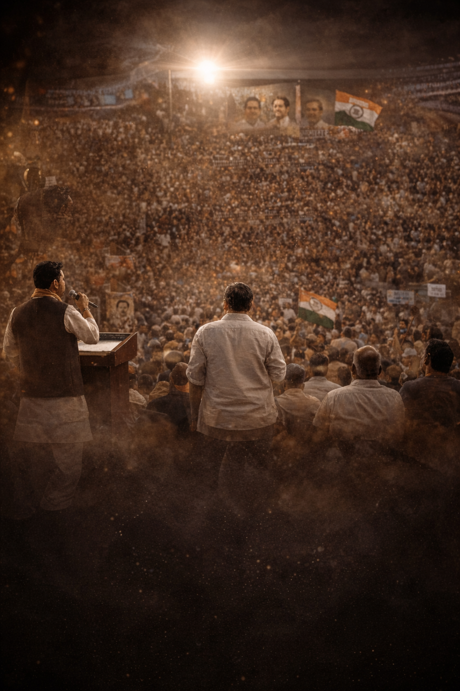
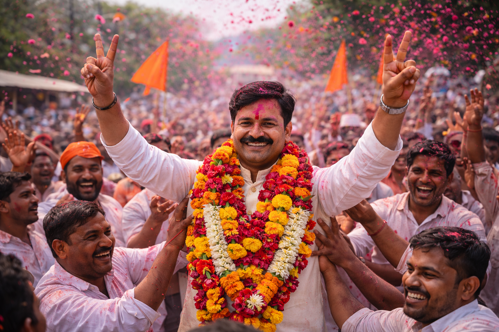

जिल्हास्तरीय निवडणूक रणनीती कार्यशाळा
डेटा विश्लेषण, संदेश फ्रेमवर्क आणि मतदार टार्गेटिंगवर सविस्तर मार्गदर्शन.
राज्यव्यापी निवडणूक रणनीती व जनसंपर्क सल्ला
Sarathi Vision (सारथी व्हिजन) ही महाराष्ट्रातील राजकीय सल्लागार संस्था असून संशोधनाधारित रणनीती, वॉर-रूम कमांड, संघटन समन्वय आणि मैदानातील काटेकोर अंमलबजावणीद्वारे विजयाची स्थिर दिशा देते.



डेटा विश्लेषण, संदेश फ्रेमवर्क आणि मतदार टार्गेटिंगवर सविस्तर मार्गदर्शन.
Speech + Communication Training सह मीडिया प्रतिसाद आणि संकट व्यवस्थापन तंत्र.
नोंद: कार्यक्रम नोंदणीसाठी Pay Now द्वारे पेमेंट पूर्ण करणे आवश्यक आहे. पेमेंट यशस्वी झाल्यानंतरच Complete Registration सक्षम होईल.
राजकीय रणनीती अनुभव
स्थानिक पातळीवरील मोहिमा
प्रशिक्षित कार्यकर्ते
वॉर-रूम सपोर्ट
सारथी व्हिजन महाराष्ट्रात ग्रामीण ते संसदीय स्तरावर प्रभावी निवडणूक सेवा देण्यासाठी पूर्णपणे सज्ज आहे.
जिल्ह्यांमध्ये सेवा तयारी
ब्लॉक्समध्ये प्रत्यक्ष कार्यक्षमता
ग्रामपंचायतींपर्यंत सेवा पोहोच
समन्वयकांची प्रशिक्षित टीम
सारथी व्हिजनची स्थापना डॉ. गणेश पाटील (PhD) यांनी केली असून संस्था महाराष्ट्रातील राजकीय नेतृत्वासाठी धोरण, विश्लेषण आणि अंमलबजावणी यांचा एकात्मिक सल्ला देते.
आमचे ध्येय: पारदर्शक, लोकाभिमुख आणि डेटा-आधारित निवडणूक रणनीतीद्वारे उमेदवार, पक्ष संघटना आणि कार्यकर्त्यांना विजयाकडे नेण्यासाठी विश्वासार्ह व्यावसायिक प्रणाली उभी करणे.

मतदारसंघातील आकडेवारी, मागील निकाल व स्थानिक घटकांचे परिमाणात्मक विश्लेषण.
मतदार अपेक्षा, मुद्दे आणि प्राधान्यक्रम जाणून घेण्यासाठी वैज्ञानिक सर्वेक्षण.
स्थानिक गरजा व विकास ध्येयांवर आधारित जाहीरनामा व वचननकाशा तयार करणे.
सोशल मीडिया मॉनिटरिंग, जलद प्रतिसाद आणि संदेश नियंत्रणासाठी केंद्रीकृत वॉर-रूम.
बूथस्तरीय कार्यकर्ते, संपर्क यादी, मतदार समन्वय आणि उपस्थिती व्यवस्थापन.
उमेदवार प्रतिमा, मीडिया प्लॅन, भाषण-बिंदू आणि ब्रँड सुसंगतता सुनिश्चित करणे.
मतदान दिवशी लॉजिस्टिक्स, ग्राउंड-कंट्रोल आणि रिअल-टाइम निर्णय व्यवस्थापन.
वैज्ञानिक नमुना पद्धतीवर आधारित मतदार सर्वेक्षण, भावना विश्लेषण आणि मुद्दानिहाय डेटा रिपोर्ट.
२४x७ कमांड सेंटर, सोशल मीडिया ट्रॅकिंग, विरोधी संदेश विश्लेषण आणि त्वरित प्रतिसाद आराखडा.
फेसबुक, इन्स्टाग्राम, यूट्यूब आणि व्हॉट्सअॅपवर लक्षित प्रेक्षकांसाठी कंटेंट, जाहिरात आणि एंगेजमेंट रणनीती.
विधानसभा मतदारसंघासाठी स्थानिक पातळीवरील संघटन आणि मुद्दा-आधारित प्रचार.
लोकसभा स्तरावर क्षेत्रीय संदेशवहन, बहु-तालुका समन्वय आणि संसदीय ब्रँडिंग.
ग्रामपंचायत निवडणुकीसाठी घराघर संपर्क, ग्रामस्तरीय नियोजन आणि प्रभावी प्रचार व्यवस्थापन.
नेतृत्व विकास, वक्तृत्व, डिजिटल संवाद, बूथ संयोजन आणि निवडणूक संचालनासाठी कार्यशाळा आयोजित केल्या जातात.
पक्ष पदाधिकारी, युवा कार्यकर्ते आणि ग्राउंड टीमसाठी स्तरनिहाय प्रशिक्षण मॉड्यूल उपलब्ध आहेत.
ग्रामस्तरीय नियोजन, ग्रामसभा संवाद, घराघर संपर्क आणि स्थानिक मुद्द्यांवरील प्रचार व्यवस्थापन.
ब्लॉक स्तरावरील समन्वय, विकास अजेंडा सादरीकरण, कार्यकर्ता व्यवस्थापन आणि जबाबदारी वाटप.
जिल्हास्तरीय रणनीती, बहु-तालुका मोहीम नियोजन, संसाधन वापर आणि प्रशासकीय समन्वय कौशल्य.
स्टेज प्रेझेन्स, मुद्देसूद भाषण लेखन, प्रभावी सादरीकरण आणि प्रेक्षकांशी जोड निर्माण तंत्र.
मीडिया हँडलिंग, इंटरव्ह्यू कौशल्य, सोशल मीडिया संदेश शिस्त आणि संकट संवाद व्यवस्थापन.
बूथ नियोजन, मतदान दिन समन्वय, डेटा रिपोर्टिंग आणि त्वरित ग्राउंड प्रतिसाद प्रणाली.
ईमेल: info@sarathivision.org
फोन: +91 9359435183 / 7057676266
कार्यालय: करंजडे, पनवेल, मुंबई, महाराष्ट्र, भारत